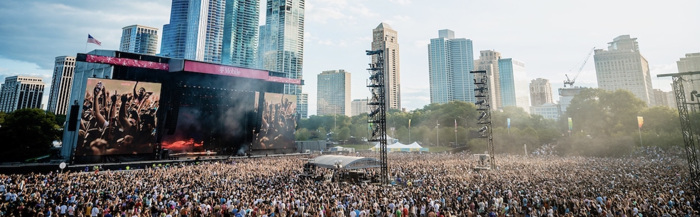
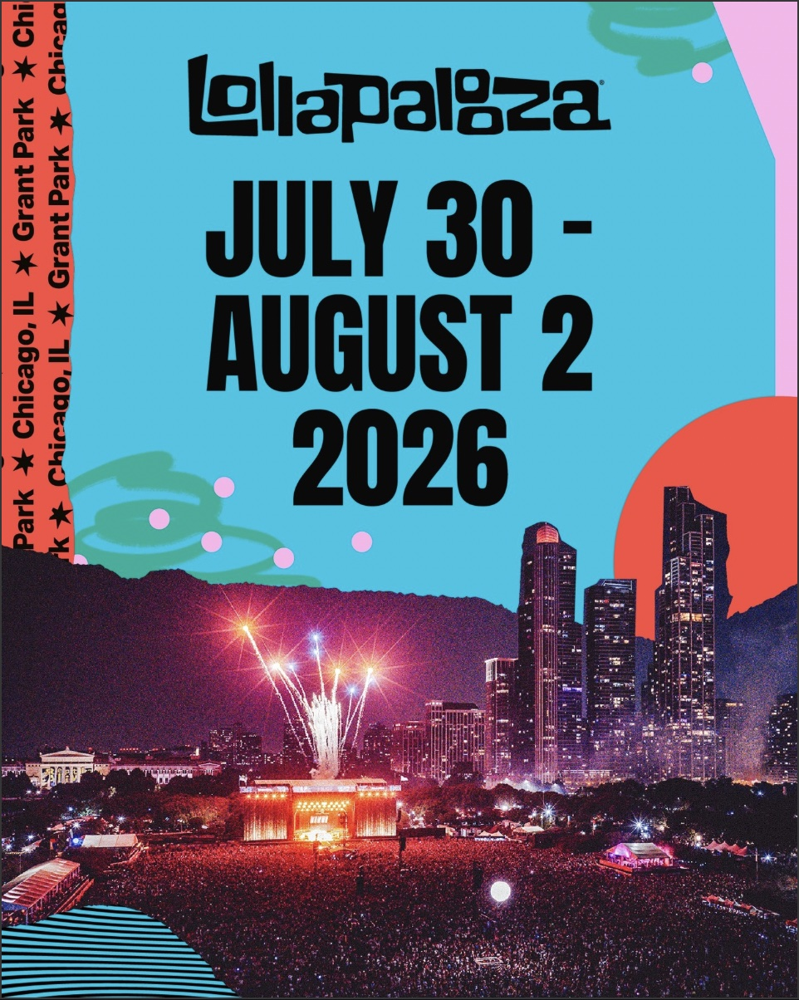

Lollapalooza is a powerhouse of the global music scene, transforming Chicago’s Grant Park into a sprawling landscape of sound and culture every summer. Originally conceived in 1991 by Jane’s Addiction frontman Perry Farrell as a touring farewell for his band, the festival eventually found its permanent home in the Windy City in 2005. Today, it spans four full days and draws roughly 400,000 attendees to the lakefront, where the city's iconic skyline provides a dramatic backdrop for more than 170 performances across eight stages. For 2026, the festival is set to take over the park from July 30 to August 2, continuing its tradition of high-energy sets and massive crowds.What truly sets Lollapalooza apart is its evolution from an underground "alternative" rock tour into a multi-genre spectacle that mirrors the diverse tastes of modern listeners. While its roots are firmly planted in 90s rock and grunge, the contemporary lineup is a meticulously curated mix of pop, hip-hop, heavy metal, and electronic dance music. Beyond the music, the festival functions as a mini-city within Chicago, featuring "Chow Town" for local culinary staples and various interactive art installations. Its massive economic impact and commitment to sustainability—including recent moves toward hybrid-battery-powered stages—have cemented it as a vital, permanent fixture of Chicago’s cultural identity.